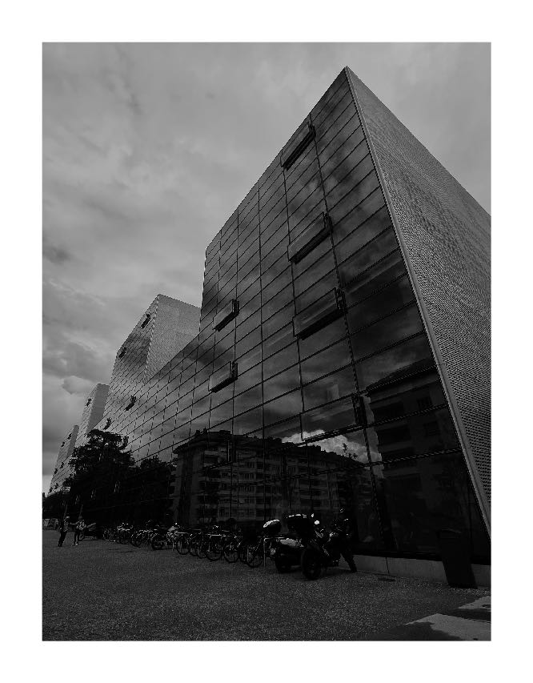
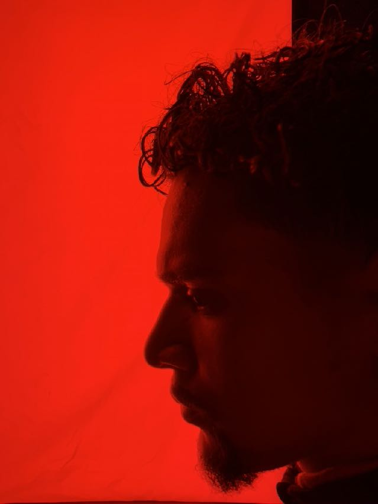

Work / Selected photographs
A world in
passing.
Architecture, movement, reflections and the human situations that briefly reorganise a place.







Project 001
Good Morning
World.
An evolving body of work about the visual theatre of ordinary life.